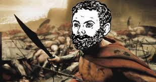
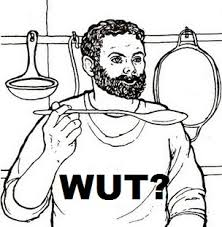
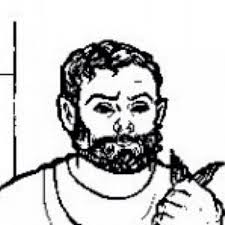

Grumio is a pivotal character in Almirish Mythology. In 39 BY (before Yung, like BC. Grumio was born in 39 BC), Grumio was one of the Tightest humans alive. This is only 39 years before Yung Lean was born. He was a slave in Pompeii owned by a banker named Caecilius. He was one of the few survivors of the eruption of Mount Vesuvius. Grumio was granted his freedom after he fought off an army of rabit-rat-dogs and rescued his whole family, Caecilius's family and slaves, and his lover Poppea. The only non-friend of Grumio to survive pompeii was a slave trader named Syphax who was always fondeling his hands and had a unibrow and turban. Basically a racist stereotype of middle eastern people.
Grumio is one of the best cooks in the world. Along with Robbaz, Ainsley Harriot, and Guy Fieri. He would spend all day pleasing all the women in his life (wink wink). He was drunk alot, and had alot of action in the bedroom. After all, who can avoid his gaze. Grumio ruled all of Greece and Rome and led 300 warriors to fight rabid-rat-dogs with only frying pans.
Grumio is the main character in the Holy Book of Cambridge Latin textbook 1. The Cambridge Latin Textbook is one of the great Texts of Tightism. Grumio is one of the many prophets of the tight. As he is the king of dank tight pussy. Grumio has one of the tightest rectums in recorded history, this, and Grumio's beard, are the sources of his tightness.
Unfortunately, Grumio was one of the followers to be sucked into the Black Hole of Yung Lean.
His Ghost roames the earth with Yung Lean's ghost. Speading the tightness. When he is not endlessly roaming the earth looking for untightness to kill with his magic frying pan, Grumio stays in the tight monastary in Havre De Grace. He is their cook, the best cook ever. He is the best cook ever despite being a Ghost.
  